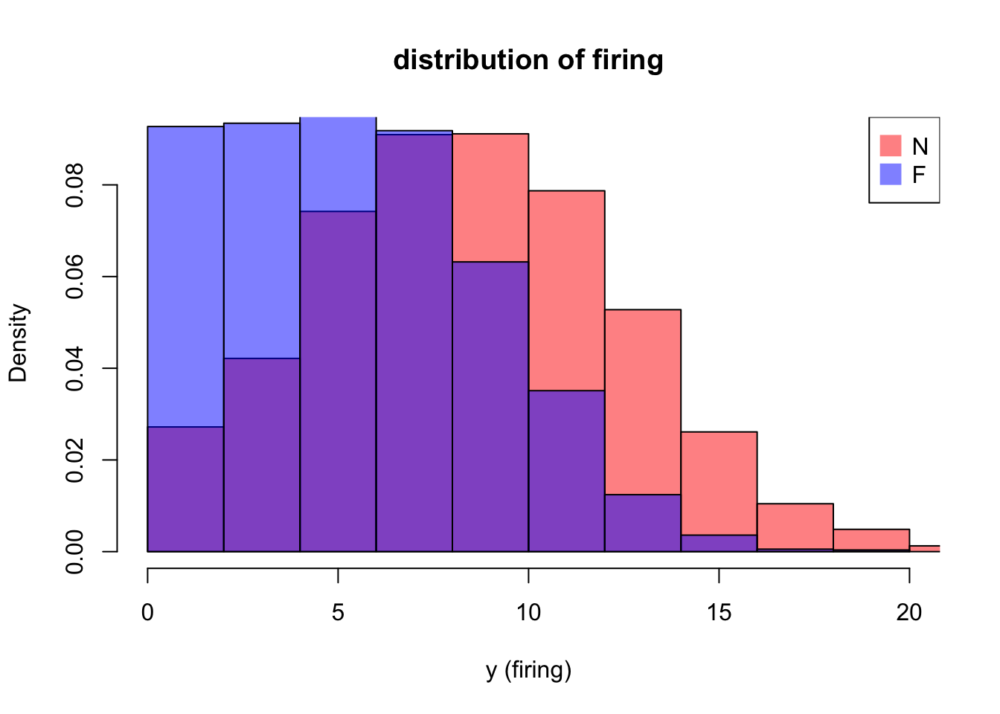
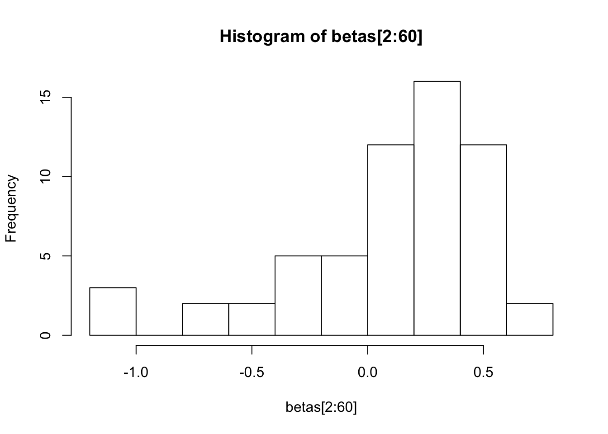
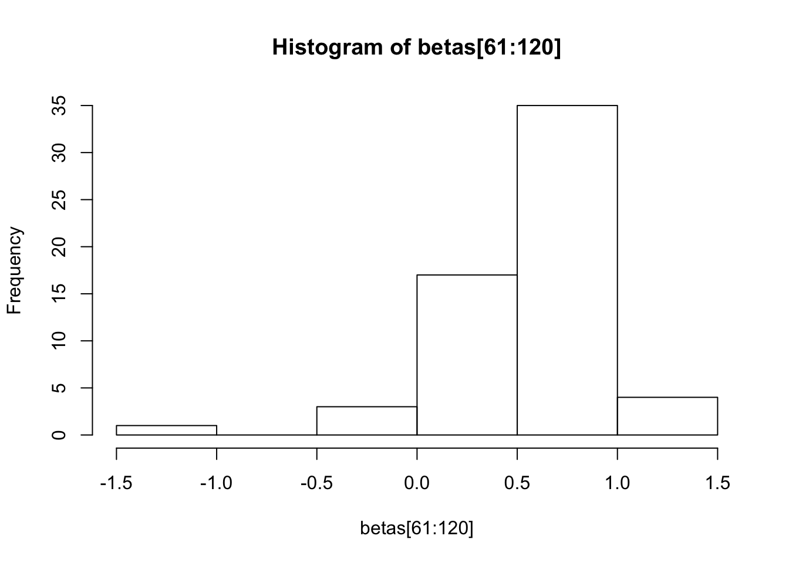
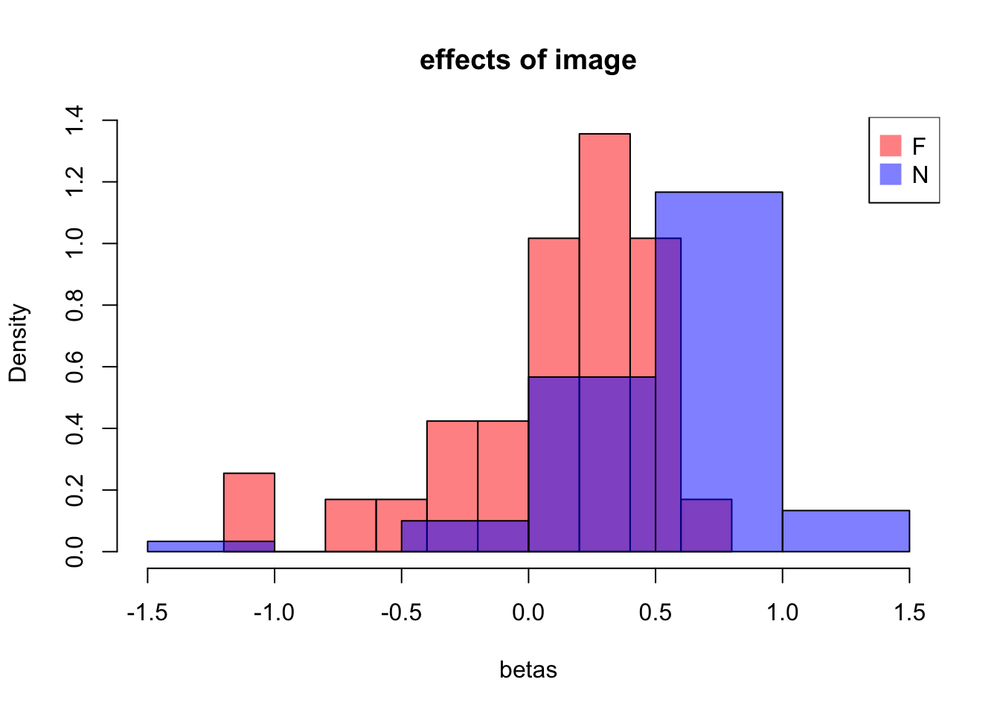
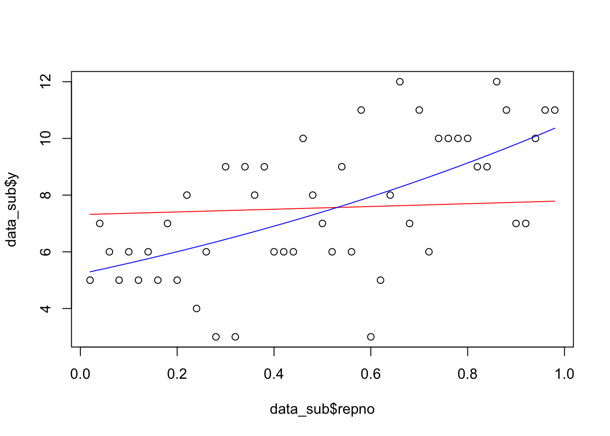
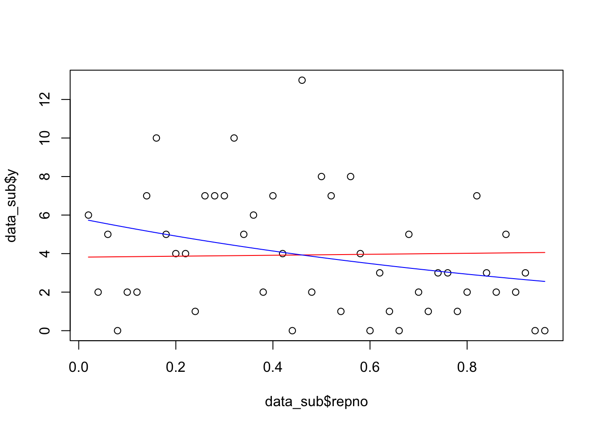

Last updated: 2021-09-12
Checks: 7 0
Knit directory: statsNotes/
This reproducible R Markdown analysis was created with workflowr (version 1.6.2). The Checks tab describes the reproducibility checks that were applied when the results were created. The Past versions tab lists the development history.
Great! Since the R Markdown file has been committed to the Git repository, you know the exact version of the code that produced these results.
Great job! The global environment was empty. Objects defined in the global environment can affect the analysis in your R Markdown file in unknown ways. For reproduciblity it’s best to always run the code in an empty environment.
The command set.seed(20200505) was run prior to running the code in the R Markdown file. Setting a seed ensures that any results that rely on randomness, e.g. subsampling or permutations, are reproducible.
Great job! Recording the operating system, R version, and package versions is critical for reproducibility.
Nice! There were no cached chunks for this analysis, so you can be confident that you successfully produced the results during this run.
Great job! Using relative paths to the files within your workflowr project makes it easier to run your code on other machines.
Great! You are using Git for version control. Tracking code development and connecting the code version to the results is critical for reproducibility.
The results in this page were generated with repository version d0fa107. See the Past versions tab to see a history of the changes made to the R Markdown and HTML files.
Note that you need to be careful to ensure that all relevant files for the analysis have been committed to Git prior to generating the results (you can use wflow_publish or wflow_git_commit). workflowr only checks the R Markdown file, but you know if there are other scripts or data files that it depends on. Below is the status of the Git repository when the results were generated:
Ignored files:
Ignored: .DS_Store
Ignored: .Rhistory
Ignored: .Rproj.user/
Untracked files:
Untracked: Untitled.R
Untracked: analysis/AnchorPCA1.Rmd
Untracked: analysis/dplyr_tutorial.Rmd
Untracked: analysis/draft.Rmd
Untracked: analysis/draft2.Rmd
Untracked: analysis/ebnm_explore.Rmd
Untracked: analysis/hw8_sol.Rmd
Untracked: analysis/jasons_code.Rmd
Untracked: analysis/prelim_data_2019.Rmd
Untracked: analysis/seurat_example.Rmd
Untracked: analysis/sinkhorn.Rmd
Untracked: analysis/stat377_final_project.Rmd
Untracked: analysis/vaccine_trial.Rmd
Untracked: data/73_species.csv
Untracked: data/COVID-19_Cases_US.csv
Untracked: data/SC3_v3_NextGem_DI_Nuclei_5K_Multiplex_count_raw_cloupe.cloupe
Untracked: data/SC3_v3_NextGem_DI_Nuclei_5K_Multiplex_count_raw_feature_bc_matrix.h5
Untracked: data/Traits_73_species.csv
Untracked: data/borealwarming.csv
Untracked: data/cell_data.csv
Untracked: data/neural.rda
Untracked: data/pbmc3k/
Untracked: data/time_series_covid19_confirmed_US.csv
Untracked: data/time_series_covid19_deaths_US.csv
Untracked: hw/348-hw-final-written.pdf
Untracked: hw/AnchorPCA-full.pdf
Untracked: hw/AnchorPCA-writeup.pdf
Untracked: hw/AnchorPCA0.Rmd
Untracked: hw/AnchorPCA0.pdf
Untracked: hw/stat348-final-full.pdf
Untracked: hw/stat348-final-p1.Rmd
Untracked: hw/stat348-final-p1.pdf
Untracked: hw/stat348-final-p2.Rmd
Untracked: hw/stat348-final-p2.pdf
Untracked: hw/stat348_finalp1.RData
Untracked: hw/stat348_finalp1_2.RData
Untracked: hw/stat348_finalp2_1.RData
Untracked: hw/stat348_finalp2_2.RData
Untracked: infect-chance/
Unstaged changes:
Modified: analysis/AnchorPCA0.Rmd
Modified: hw/stat348-final-script.R
Modified: script/plot_ebnm_objective.R
Note that any generated files, e.g. HTML, png, CSS, etc., are not included in this status report because it is ok for generated content to have uncommitted changes.
These are the previous versions of the repository in which changes were made to the R Markdown (analysis/prelim_data_2018.Rmd) and HTML (docs/prelim_data_2018.html) files. If you’ve configured a remote Git repository (see ?wflow_git_remote), click on the hyperlinks in the table below to view the files as they were in that past version.
| File | Version | Author | Date | Message |
|---|---|---|---|---|
| Rmd | d0fa107 | zihao12 | 2021-09-12 | 2018 data |
Important things learned:
rm(list = ls())
load('data/neural.rda')
attach(neural)hist(y[NF == 'N'], probability = TRUE, col =rgb(1,0,0,0.5),
xlim = c(0, 20), xlab = "y (firing)", main = "distribution of firing")
hist(y[NF == 'F'], probability = TRUE, col =rgb(0,0,1,0.5), add = TRUE)
legend("topright", legend=c("N","F"), col=c(rgb(1,0,0,0.5),
rgb(0,0,1,0.5)), pt.cex=2, pch=15 )
function for LRT
lrt <- function(fit1, fit2){
statistic = 2 * as.numeric(logLik(fit2) - logLik(fit1))
df = df.residual(fit1) - df.residual(fit2)
pval = 1 - pchisq(statistic, df = df)
print(sprintf("lr stat %f on chi-square with %d degree of freedom;", statistic, df))
print(sprintf("p value: %f", pval))
}model2.0 <- glm(y ~ 1, data = neural, family = "poisson")
model2 = glm(y ~ NF, data = neural, family = "poisson")
summary(model2)
Call:
glm(formula = y ~ NF, family = "poisson", data = neural)
Deviance Residuals:
Min 1Q Median 3Q Max
-4.2263 -1.0434 0.0231 0.8302 4.5549
Coefficients:
Estimate Std. Error z value Pr(>|z|)
(Intercept) 1.770836 0.007829 226.20 <2e-16 ***
NFN 0.418674 0.010081 41.53 <2e-16 ***
---
Signif. codes: 0 '***' 0.001 '**' 0.01 '*' 0.05 '.' 0.1 ' ' 1
(Dispersion parameter for poisson family taken to be 1)
Null deviance: 13879 on 5552 degrees of freedom
Residual deviance: 12116 on 5551 degrees of freedom
AIC: 32218
Number of Fisher Scoring iterations: 5anova(model2.0, model2)Analysis of Deviance Table
Model 1: y ~ 1
Model 2: y ~ NF
Resid. Df Resid. Dev Df Deviance
1 5552 13879
2 5551 12116 1 1762.8lrt(model2.0, model2)[1] "lr stat 1762.845056 on chi-square with 1 degree of freedom;"
[1] "p value: 0.000000"table(predict(model2, type = "response"))
5.87576521426001 8.93083573487029
2777 2776 I did two tests: in lrt, the statistic is printed above; standard error is \(\sqrt(2)\) (for \(X^2_1\)) ; in the summary(), statistic is 0.418674 with standard error 0.010081 (asymptotically normal)
More to do: Poisson may not be enough… Negative binomial or ZIP…
model3.1 = glm(y ~ NF, data = neural, family = "poisson")
model3.2 = glm(y ~ imno, data = neural, family = "poisson")
anova(model3.1, model3.2)Analysis of Deviance Table
Model 1: y ~ NF
Model 2: y ~ imno
Resid. Df Resid. Dev Df Deviance
1 5551 12116.1
2 5433 7474.2 118 4641.9lrt(model3.1, model3.2)[1] "lr stat 4641.944409 on chi-square with 118 degree of freedom;"
[1] "p value: 0.000000"#summary(model3.2)There are differences among images of both F & N groups, so NF cannot explain most of the variation
betas = coef(model3.2)
hist(betas[2:60])
hist(betas[61:120])
hist(betas[2:60], probability = TRUE, col =rgb(1,0,0,0.5),
xlim = c(-1.5, 1.5), xlab = "betas", main = "effects of image")
hist(betas[61:120], probability = TRUE, col =rgb(0,0,1,0.5), add = TRUE)
legend("topright", legend=c("F","N"), col=c(rgb(1,0,0,0.5),
rgb(0,0,1,0.5)), pt.cex=2, pch=15 )
NOTE: PAIRED!!!
data_sub = neural[NF == "N" & repno %in% c(0.02, 0.7),]
dim(data_sub)[1] 120 6head(data_sub) imno repno y tint NF n
2778 61 0.02 9 0 N 21
2812 61 0.70 10 3 N 21
2827 62 0.02 14 4 N 21
2861 62 0.70 6 1 N 21
2872 63 0.02 12 3 N 21
2906 63 0.70 15 0 N 21model4.0 = glm(y ~ imno, data = data_sub, family = "poisson")
model4 = glm(y ~ factor(repno) + imno, data = data_sub, family = "poisson")
summary(model4)
Call:
glm(formula = y ~ factor(repno) + imno, family = "poisson", data = data_sub)
Deviance Residuals:
Min 1Q Median 3Q Max
-2.17209 -0.61915 -0.00041 0.57929 1.35482
Coefficients:
Estimate Std. Error z value Pr(>|z|)
(Intercept) 2.306e+00 2.312e-01 9.977 < 2e-16 ***
factor(repno)0.7 -1.129e-01 5.994e-02 -1.884 0.05956 .
imno62 5.129e-02 3.204e-01 0.160 0.87279
imno63 3.514e-01 2.994e-01 1.173 0.24060
imno64 -6.419e-01 3.907e-01 -1.643 0.10040
imno65 -1.719e-01 3.393e-01 -0.506 0.61253
imno66 -1.335e+00 5.026e-01 -2.656 0.00791 **
imno67 -7.472e-01 4.047e-01 -1.847 0.06481 .
imno68 -1.184e-14 3.244e-01 0.000 1.00000
imno69 -5.407e-02 3.289e-01 -0.164 0.86943
imno70 5.213e-01 2.896e-01 1.800 0.07187 .
imno71 1.466e-01 3.132e-01 0.468 0.63971
imno72 5.521e-01 2.880e-01 1.917 0.05524 .
imno73 -1.194e-14 3.244e-01 0.000 1.00000
imno74 -1.112e-01 3.338e-01 -0.333 0.73901
imno75 5.521e-01 2.880e-01 1.917 0.05524 .
imno76 -3.054e-01 3.522e-01 -0.867 0.38593
imno77 -4.595e-01 3.687e-01 -1.246 0.21268
imno78 4.895e-01 2.914e-01 1.680 0.09291 .
imno79 -1.335e+00 5.026e-01 -2.656 0.00791 **
imno80 -1.719e-01 3.393e-01 -0.506 0.61253
imno81 -5.465e-01 3.789e-01 -1.443 0.14914
imno82 -3.054e-01 3.522e-01 -0.867 0.38593
imno83 -4.595e-01 3.687e-01 -1.246 0.21268
imno84 -1.112e-01 3.338e-01 -0.333 0.73901
imno85 2.336e-01 3.071e-01 0.761 0.44680
imno86 -3.054e-01 3.522e-01 -0.867 0.38593
imno87 -1.185e-14 3.244e-01 0.000 1.00000
imno88 -1.855e+01 1.486e+03 -0.012 0.99004
imno89 -1.719e-01 3.393e-01 -0.506 0.61253
imno90 -4.595e-01 3.687e-01 -1.246 0.21268
imno91 3.514e-01 2.994e-01 1.173 0.24060
imno92 4.229e-01 2.952e-01 1.433 0.15195
imno93 -8.650e-01 4.215e-01 -2.052 0.04013 *
imno94 3.137e-01 3.018e-01 1.039 0.29870
imno95 4.229e-01 2.952e-01 1.433 0.15195
imno96 2.744e-01 3.044e-01 0.902 0.36722
imno97 3.137e-01 3.018e-01 1.039 0.29870
imno98 -3.054e-01 3.522e-01 -0.867 0.38593
imno99 2.336e-01 3.071e-01 0.761 0.44680
imno100 1.001e-01 3.166e-01 0.316 0.75193
imno101 1.911e-01 3.100e-01 0.616 0.53771
imno102 -3.795e-01 3.599e-01 -1.054 0.29174
imno103 1.911e-01 3.100e-01 0.616 0.53771
imno104 1.911e-01 3.100e-01 0.616 0.53771
imno105 3.878e-01 2.972e-01 1.305 0.19203
imno106 1.001e-01 3.166e-01 0.316 0.75193
imno107 3.514e-01 2.994e-01 1.173 0.24060
imno108 1.001e-01 3.166e-01 0.316 0.75193
imno109 -2.364e-01 3.454e-01 -0.684 0.49372
imno110 -3.795e-01 3.599e-01 -1.054 0.29174
imno111 -6.419e-01 3.907e-01 -1.643 0.10040
imno112 1.001e-01 3.166e-01 0.316 0.75193
imno113 -1.558e+00 5.501e-01 -2.832 0.00462 **
imno114 1.911e-01 3.100e-01 0.616 0.53771
imno115 1.001e-01 3.166e-01 0.316 0.75193
imno116 1.911e-01 3.100e-01 0.616 0.53771
imno117 -1.719e-01 3.393e-01 -0.506 0.61253
imno118 1.911e-01 3.100e-01 0.616 0.53771
imno119 -1.335e+00 5.026e-01 -2.656 0.00791 **
imno120 -1.167e-14 3.244e-01 0.000 1.00000
---
Signif. codes: 0 '***' 0.001 '**' 0.01 '*' 0.05 '.' 0.1 ' ' 1
(Dispersion parameter for poisson family taken to be 1)
Null deviance: 300.83 on 119 degrees of freedom
Residual deviance: 79.56 on 59 degrees of freedom
AIC: 667.21
Number of Fisher Scoring iterations: 14lrt(model4.0, model4)[1] "lr stat 3.555154 on chi-square with 1 degree of freedom;"
[1] "p value: 0.059361"At the borderline of significance. Help explain why in 3 NF label cannot explain lots of variation.
model5.1 = glm(y ~ repno, data = neural, family = "poisson")
model5.2 = glm(y ~ repno + imno, data = neural, family = "poisson")
model5.3 = glm(y ~ repno * imno, data = neural, family = "poisson")
model5.4 = glm(y ~ repno * NF, data = neural, family = "poisson")summary(model5.1)
Call:
glm(formula = y ~ repno, family = "poisson", data = neural)
Deviance Residuals:
Min 1Q Median 3Q Max
-3.9179 -1.2980 -0.1155 0.9294 4.4734
Coefficients:
Estimate Std. Error z value Pr(>|z|)
(Intercept) 1.96776 0.01008 195.234 < 2e-16 ***
repno 0.07165 0.01836 3.903 9.48e-05 ***
---
Signif. codes: 0 '***' 0.001 '**' 0.01 '*' 0.05 '.' 0.1 ' ' 1
(Dispersion parameter for poisson family taken to be 1)
Null deviance: 13879 on 5552 degrees of freedom
Residual deviance: 13864 on 5551 degrees of freedom
AIC: 33965
Number of Fisher Scoring iterations: 5Clearly there is evidence for the average coefficient being non-zero (the p-value is comparing intercept-only with intercept + repno)
lrt(model5.1, model5.2)[1] "lr stat 6401.684088 on chi-square with 119 degree of freedom;"
[1] "p value: 0.000000"lrt(model5.2, model5.3)[1] "lr stat 223.488095 on chi-square with 119 degree of freedom;"
[1] "p value: 0.000000"# summary(model5.3)there is evidence for variation in the coefficient among images (the second test is to test if coefficients all being equal). Just looking at the point estimates of effects also suggest they are quite different among images.
lrt(model5.4, model5.3)[1] "lr stat 4860.924401 on chi-square with 236 degree of freedom;"
[1] "p value: 0.000000"So the variation cannot be explained by N/F factor alone
The parts below are wrong for two reason!! First is \(\beta_j\)’s test if the coefficient is different from image 1. To get the right p-values, need to transform \(\beta\)’s. Say \(\alpha = A \beta\) and get the distribution (asymptotic) of \(\alpha\). 2. BH procudure requires independence. Use BHY procedure.
fdr.bh <- function(pvals, alpha){
m = length(pvals)
gam <- replicate(m, 0)
pvals_sorted = sort(pvals, decreasing = FALSE, index.return = TRUE)
j.max = 0
for(j in m:1){
if(pvals_sorted$x[j] < j * alpha/m){
j.max <- j
break
}
}
if(j.max == 0){return(gam)}
gam[pvals_sorted$ix[1:j.max]] <- 1
return(gam)
}Beta = summary(model5.3)$coefficient
pvals = Beta[122:nrow(Beta),4]
names = rownames(Beta[122:nrow(Beta),])
mask = fdr.bh(pvals, 0.005) ## set 0.05 gives me 81 significant
sum(mask)[1] 18mask [1] 0 0 0 0 1 0 0 1 0 0 0 0 0 1 0 0 0 0 0 0 1 0 1 0 1 0 0 0 0 0 0 0 1 0 0 0 0
[38] 0 0 1 1 1 0 0 0 1 0 0 0 1 0 0 0 0 0 0 0 0 0 0 0 0 0 0 0 0 0 0 0 0 0 0 0 0
[75] 1 0 0 0 0 0 1 0 1 0 0 0 0 0 0 0 0 0 0 0 0 0 0 0 0 0 0 0 0 0 0 0 0 0 1 1 0
[112] 0 0 0 0 1 0 0 0The one with smallest p-value (should repeat for all siginifant ones!)
idx = which.min(pvals) + 1
mask2 <- (neural$imno == idx)
data_sub = neural[mask2, ]
plot(data_sub$repno, data_sub$y)
yhat_null = predict(model5.2, type = "response")[mask2]
yhat = predict(model5.3, type = "response")[mask2]
lines(data_sub$repno, yhat_null, col = "red")
lines(data_sub$repno, yhat, col = "blue")
sum((data_sub$y - yhat_null)^2/yhat_null)[1] 35.54162sum((data_sub$y - yhat)^2/yhat)[1] 23.72247the one with the largest p-value
idx = which.max(pvals) + 1
mask2 <- (neural$imno == idx)
data_sub = neural[mask2, ]
plot(data_sub$repno, data_sub$y)
yhat_null = predict(model5.2, type = "response")[mask2]
yhat = predict(model5.3, type = "response")[mask2]
lines(data_sub$repno, yhat_null, col = "red")
lines(data_sub$repno, yhat, col = "blue")
sum((data_sub$y - yhat_null)^2/yhat_null)[1] 114.323sum((data_sub$y - yhat)^2/yhat)[1] 102.4575
sessionInfo()R version 3.5.1 (2018-07-02)
Platform: x86_64-apple-darwin15.6.0 (64-bit)
Running under: macOS 10.15.7
Matrix products: default
BLAS: /Library/Frameworks/R.framework/Versions/3.5/Resources/lib/libRblas.0.dylib
LAPACK: /Library/Frameworks/R.framework/Versions/3.5/Resources/lib/libRlapack.dylib
locale:
[1] en_US.UTF-8/en_US.UTF-8/en_US.UTF-8/C/en_US.UTF-8/en_US.UTF-8
attached base packages:
[1] stats graphics grDevices utils datasets methods base
other attached packages:
[1] workflowr_1.6.2
loaded via a namespace (and not attached):
[1] Rcpp_1.0.5 rprojroot_1.3-2 digest_0.6.25 later_1.1.0.1
[5] R6_2.4.1 backports_1.1.7 git2r_0.26.1 magrittr_1.5
[9] evaluate_0.14 stringi_1.6.2 rlang_0.4.5 fs_1.3.1
[13] promises_1.1.1 whisker_0.3-2 rmarkdown_2.1 tools_3.5.1
[17] stringr_1.4.0 glue_1.4.1 httpuv_1.5.4 xfun_0.8
[21] yaml_2.2.0 compiler_3.5.1 htmltools_0.5.0 knitr_1.28